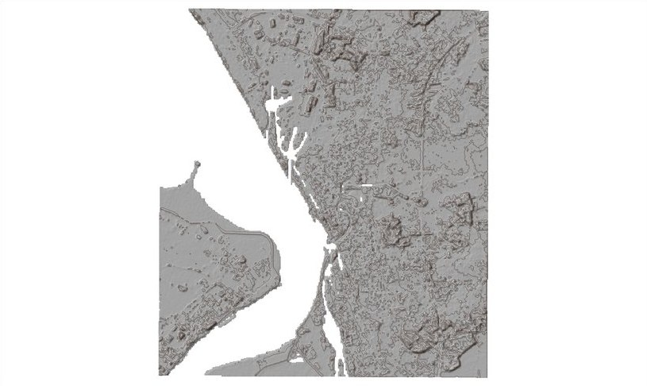
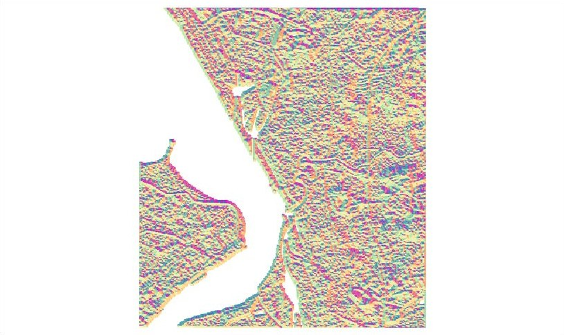
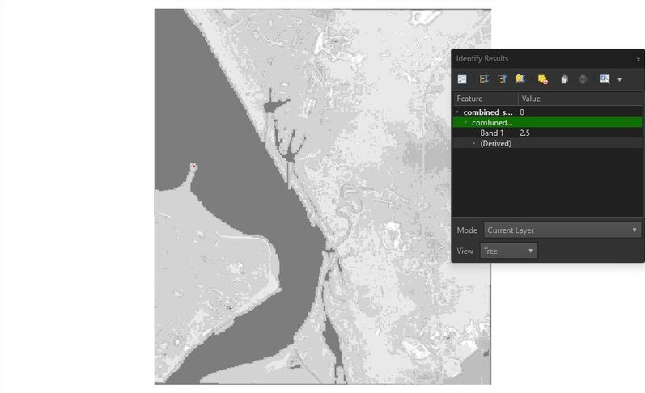

Back to selected work
DEM-Based Terrain and Suitability Analysis
A raster workflow in QGIS that turns a Digital Elevation Model into terrain layers and a combined suitability map.
Independent technical learning project. The results illustrate a GIS workflow and are not a validated site-selection recommendation.
Workflow
- Start from the DEMThe Digital Elevation Model is the single input for every layer that follows.
- Derive terrainHillshade for relief, slope for steepness, aspect for the direction slopes face, and contour lines.
- ReclassifyElevation and slope values are turned into suitability classes. The slope layer uses classes 0 to 3.
- Weighted overlayThe suitability layers are combined into one combined-suitability raster.
Outputs




What this shows
- Deriving several terrain layers from one elevation model.
- Turning continuous raster values into classes and combining criteria with weights.
- Reading a result critically: the weights and class breaks are choices, so the output is a model, not a verdict.
Next improvement: document the DEM source and the class thresholds next to each output.